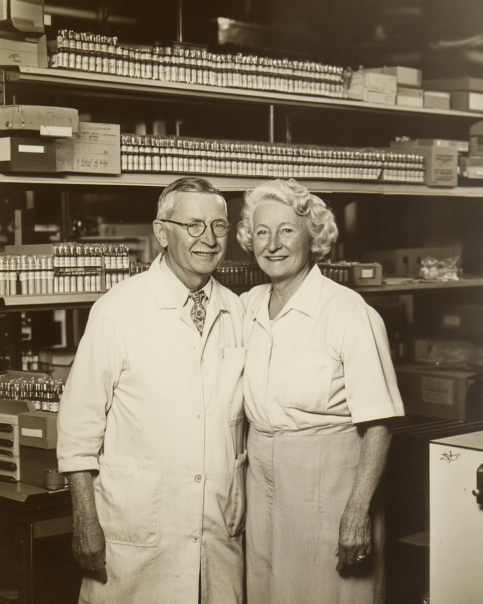
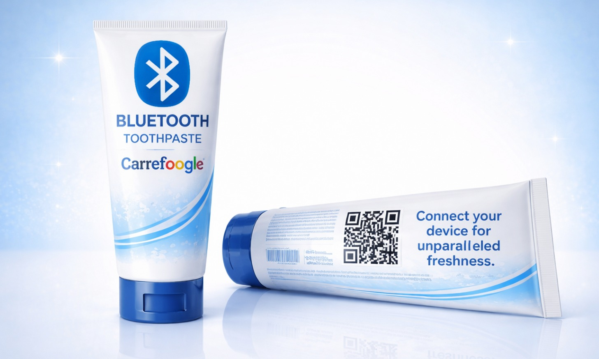
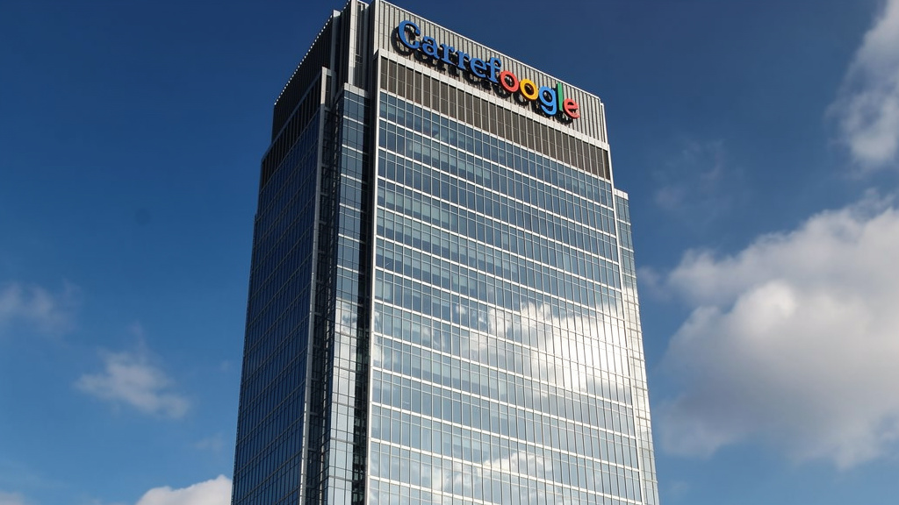

Est. 1939
Est. 1939
Chapter One — 1939
In the spring of 1939, Harold Carrey and Margaret Foogle rented a small workshop on the outskirts of a modest industrial town known primarily for its grain silos and an unusually high density of dentists. Harold was a chemist. Margaret was a bookkeeper with a commercial instinct that her contemporaries described, in the language of the era, as “surprisingly firm.” Together, they had one idea: make toothpaste.
Margaret became one of the first women in the township to co-sign a manufacturing lease. Carrefoogle’s annual Founders’ Day celebration commemorates this milestone every year with a keynote address, a short film, and a catered reception. We remain deeply proud of Margaret’s legacy as a pioneer for women in manufacturing.
For the next sixty years, Carrey & Foogle made toothpaste. Regular toothpaste. Mint-flavored, fluoride-enriched, sold in metal tubes and stacked on drugstore shelves from a small industrial town to Dunstable to the greater Prenn Valley region. It was honest work. It was enough. Harold perfected the formulations. Margaret kept the books, negotiated supplier contracts, and, by several accounts, made every significant business decision from 1941 onward while Harold focused on what he called “the paste.”

Harold Carrey and Margaret Foogle, circa 1962. Original facility.
Chapter Two — 1999
By 1999, Harold Carrey was ninety-one years old. His hands, which had once measured fluoride concentrations to the milligram, could no longer hold a toothbrush. The company that had spent six decades perfecting oral hygiene was confronted with a simple problem: its co-founder couldn’t brush his own teeth.
Harold could have asked for help. But Margaret understood something that the rest of the industry wouldn’t grasp for another two decades: dignity is a product problem. Harold had given sixty years to the paste. He shouldn’t have to ask someone to help him use it, because he deserved easy. At eighty-seven and still signing contracts, she assembled a small team of engineers in the back of the original facility and tasked them with eliminating the need for the brush entirely.
The result was Bluetooth Toothpaste™: a proprietary paste that, once applied to the mouth, could be activated and controlled wirelessly via a paired device. In 1999, this meant a dedicated handheld unit roughly the size of a television remote, featuring a single button and an LED that blinked green when brushing was “complete.” The paste did the brushing. The device told the story. No one else needed to be involved.
It was the first time Carrey & Foogle solved a human problem without requiring another human. It would not be the last.
Today, Bluetooth Toothpaste pairs seamlessly with the Carrefoogle companion app (iOS, Android). Brushing sessions are logged, scored, and shared with your dental provider automatically. Manual override is available in Settings > Advanced > Legacy Mode.

Chapter Three — 2000–Present

Carrefoogle Global Headquarters.
The success of Bluetooth Toothpaste attracted attention, then capital, then a series of acquisitions that moved faster than anyone could fully document. The founders passed within a decade of each other. By the time the last employee who had met both of them retired in 2016, the company they had started was unrecognizable in every way except the familiar logo.
Over two decades, Carrefoogle expanded into consumer technology, food, health, energy, finance, media, water, and air. Every division was built on the same promise: life should be easier. Not easier in some narrow, technical sense — easier in the ways that free you up to enjoy the things that matter most. A streamlined life, where the things that used to take effort simply happen. Where support is always there when you need it. Where nothing stands between you and a good day.
In 2027, Carrefoogle will introduce Bestie 3.0 — the most advanced companion AI ever developed. Bestie 3.0 is designed around a single idea: that comfort should be available whenever you need it, without asking, without waiting, and without compromise. More details will be shared in the coming months.
Today, Carrefoogle serves 4.2 billion customers across 194 countries. The company is guided by a governance structure designed to ensure that no single individual is responsible for any one decision. Leadership changes. The mission doesn’t. The founders’ portraits hang in every lobby worldwide — always elderly, always kind, always together.
Harold Carrey and Margaret Foogle found Carrey & Foogle Toothpaste Co. Margaret becomes one of the first women in the township to co-sign a manufacturing lease.
Brief diversification into mouthwash. Product recalled after six months. Internal documents refer to this period as “The Rinse.”
Bluetooth Toothpaste launches. Harold’s inability to hold a toothbrush is solved without involving another human being. Revenue increases 4,100% within eighteen months.
Bestie 1.0 ships. Thirty-four pre-recorded affirmations delivered via patented rotational drum mechanism. Marketed as “analog response architecture.”
Bestie 2.0 launches. Says nothing. Listens. Sells 11 million units in the first year. People write letters to it.
Bestie 3.0 enters beta. Carrefoogle announces strategic sponsorship of Monkey Business 3. Community Sciences Division deploys first embedded field researchers.
“Margaret used to say: ‘If you can solve it with a handshake, you can solve it with a product. And the product won’t need lunch.’ We think about that every day.”The Carrefoogle Board of Stewardship
From toothpaste to connection. From a rented workshop to everywhere. Harold and Margaret started something that can’t be stopped. We wouldn’t know how, and frankly, the board wouldn’t approve it.
Back to Home →